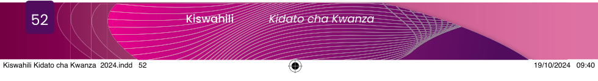

Helena: Nzuri pia rafiki yangu.
Nanzia: Jamani poleni kwa mafuriko, yanatisha!
Helena: Usiseme Nanzia.
Mafuriko yanatisha.
Tulifikiiri ni kama
Nuru: (Akidakia.) Enhe! Hebu tusimulie dada.
Helena: Hapo kwetu ndipo hasa mkondo wa maji ulipopitia.
Ilikuwa bahati kwani mzee mmoja aliwahi kupiga kelele tukatoka nje kabla ya balaa lile halafu tukakimbilia kwenye mwinuko.
Nanzia: Ilikuwa usiku au mchana?
Helena: Usiku, kama saa tano au sita hivi kwa sababu tulikuwa tumekwishalala.
Nuru: Yaani mlikimbia?
Helena: Yule mzee aliwahi kuyaona yale maporomoko ya mawe na miti na maji mengi yakitiririka kutoka mlimani …
Nuru: Jamani Helena, mawe na miti?
Helena: Eee! Mawe makubwa yaliviringishwa nayo yakavunja miti huku maji yakimong’onyoa ardhi.
Chochote kilichokutwa na maji hayo kilisombwa.
Gari la misheni lilikumbwa, likasombwa na kuharibiwa kabisa.
Basi, maji yale yalipofika kijijini kwetu, Loo!
Nanzia: (Akishika midomo kwa masikitiko.) Nyumba zenu?
Helena: Nyumba zetu zilifagiliwa tukiziona hivihivi kwa macho yetu.
Vitu vyote vilisombwa tukabaki hivihivi bila hata bakuli, sufuria wala kijiko …
Nuru: (Akiwa ameshika kichwa.) Helena unasema kweli? Sasa ikawaje?
Nanzia: Sasa wewe na ndugu zako mlilala wapi?
Helena: Wee! Tulipata shida.
Tulilala nje.
Tulikata miti tukatengeneza wigo.
Baada ya siku mbili tatu tuliletewa mahema na misaada mingine.
Nanzia: Jamani Helena! Poleni sana.
Tulipopata habari za mafuriko, tulikukumbuka na kukusikitikia.
Helena: Asante sana rafiki yangu.
Maswali
